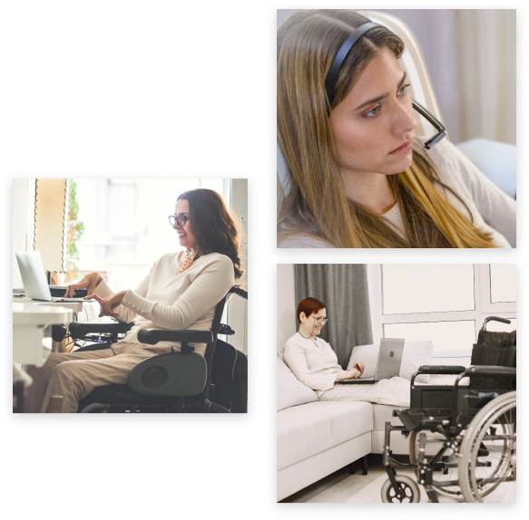

Visando contribuir para o bem-estar e uma maior qualidade de vida de pessoas diagnosticadas com a ELA (Esclerose Lateral Amiotrófica) a instituição X foi idealizada.
Surgimos como uma forma de facilitar e trazer maior autonomia ao paciente na procura de equipamentos necessários em cada estágio desta doença.
Somos uma instituição sem fins lucrativos, sediada em Coimbra. Precisamente por não termos fins lucrativos, dependemos de doações de equipamentos para oferecer uma gama de produtos.
Contamos com o apoio de algumas entidades como o SNS, PROHS e
BACELAR. Comprometemo-nos a fazer a manutenção destes equipamentos recebidos para poder oferecê-los a um preço mensal mais acessível.
Temos uma preocupação acentuada com o tema da acessibilidade e por essa mesma razão a nossa intenção aquando da criação deste Website foi torná-lo acessível de modo a que pessoas com Esclerose Lateral Amiotrófica pudessem aceder ao mesmo e conseguissem navegar sem necessitar da ajuda de terceiros. Para tal, este Website foi criado com base em (X) Guidelines, dando-nos uma avaliação de bronze. Sabe mais na nossa página sobre acessibilidade.
